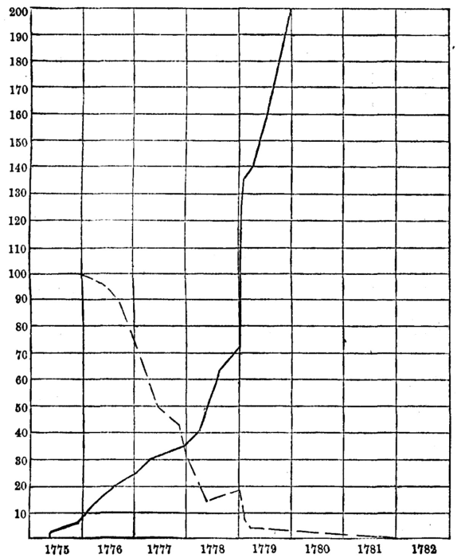

Chapter 26: Of An Inconvertible Paper Currency¶
26.1 § 1. What determines the value of an inconvertible paper money?¶
After experience had shown that pieces of paper, of no intrinsic value, by merely bearing upon them the written profession of being equivalent to a certain number of francs, dollars, or pounds, could be made to circulate as such, and to produce all the benefit to the issuers which could have been produced by the coins which they purported to represent, governments began to think that it would be a happy device if they could appropriate to themselves this benefit, free from the condition to which individuals issuing such paper substitutes for money were subject, of giving, when required, for the sign, the thing signified. They determined to try whether they could not emancipate themselves from this unpleasant obligation, and make a piece of paper issued by them pass for a pound, by merely calling it a pound, and consenting to receive it in payment of the taxes.
In the case supposed, the functions of money are performed by a thing which derives its power of performing them solely from convention; but convention is quite sufficient to confer the power; since nothing more is needful to make a person accept anything as money, and even at any arbitrary value, than the persuasion that it will be taken from him on the same terms by others. The only question is, what determines the value of such a currency, since it can not be, as in the case of gold and silver (or paper exchangeable for them at pleasure), the cost of production.
We have seen, however, that even in the case of metallic currency, the immediate agency in determining its value is its quantity. If the quantity, instead of depending on the ordinary mercantile motives of profit and loss, could be arbitrarily fixed by authority, the value would depend on the fiat of that authority, not on cost of production. The quantity of a paper currency not convertible into the metals at the option of the holder can be arbitrarily fixed, especially if the issuer is the sovereign power of the state. The value, therefore, of such a currency is entirely arbitrary.
The value of paper money is, of course, primarily and mainly dependent on the quantity issued. The general level of value depends on the quantity; but we also find that deviations from this general level, in the direction of further depreciation than could be due to quantity alone, is caused by any event which shakes the confidence of any one that he may get the existing value for his paper. The “convention” by which real value (the essential idea of money) was associated with this paper in the minds of all is thereby broken. Fiat money—that is, a piece of paper, not containing a promise to pay a dollar, but a simple declaration that this is a dollar—therefore, separates the paper from any connection with value. And yet we see that fiat money has some, although a fluctuating, value at certain times: if the State receives it for taxes, if it is a legal acquittal of obligations, then, to that extent, a certain quantity of it is given a value equal to the wealth represented by the taxes, or the debts. Jevons remarks on this point1 that, if “the quantity of notes issued was kept within such moderate limits that any one wishing to realize the metallic value of the notes could find some one wanting to pay taxes, and therefore willing to give coin for notes,” stability of value might be secured. If there is more in circulation than performs these functions, it will depreciate in the proportion of the quantity to the extent of the uses assigned to it; so that the relation of quantity to uses is the only thing which can give value to fiat money, but beyond a certain point in the issues other forces than mere quantity begin to affect the value. Although the paper is not even a promise to pay value, the form of expression on its face, or the term used as its designation, generally tends, under the force of convention and habit, to give a popular value to paper.
Although the State may not promise to pay a dollar, yet, wherever such paper money carries any purchasing power with it (which has very seldom happened, and then only for short periods), it will be found that there is a vague popular understanding that the State intends, at some time or other, to redeem the notes with value in coin to some amount. In the early cases of irredeemable money in our colonies, the income of taxes, or similar resources, were promised as a means of redemption. To some—although a slight—extent, the idea of value was associated with such paper. The actual quantity issued did not measure the depreciation. The paper did depreciate with increased issues. But only in so far as the increased issues proved to the community that there was less and less possibility of ever receiving value for them did they depreciate. In other words, we come to the familiar experience, known to many, of a paper money depending for its value on the opinions of men in the country. This was partially true, even of our own greenbacks, which were not fiat money, but promises to pay (although not then redeemable), as may be seen by the movement of the line in Chart XII (p. 359), which represents the fluctuations of our paper money during the civil war. The upward movement of the line, which indicates the premium on gold during our late war, of course represents correspondingly the depreciation of the paper. Every victory or defeat of the Union arms raised or lowered the premium on gold; it was the register of the opinion of the people as to the value to be associated with the paper. The second and third resorts to issues of greenbacks were regarded as confessions of financial distress; it was this which produced the effect on their value. It was not only the quantity but also that which caused the issue of the quantity. It is, of course, clear that the value of a paper money like the greenbacks, which were the promises to pay of a rich country, would bear a definite relation to the actual quantity issued; and this is to be seen by the generally higher level of the line on the chart, showing a steadily diminishing purchasing power as the issues increased. But the thing which weighed largely in people's minds was the possibility of ultimate redemption; and the premium on gold was practically a register of the “betting” on this possibility. In 1878, when Secretary Sherman's reserve was seen to be increasing to an effective amount, and when it became evident that he would have the means (i.e., the value represented by all the paper that was likely to be presented) to resume on the day set, January 1, 1879, the premium gradually faded away. The general shifting of the level to a lower stage in this later period was not due to any decrease in the quantity outstanding, because the contraction had been stopped in 1868, and that consequent on the resumption act in May, 1878.
Suppose that, in a country of which the currency is wholly metallic, a paper currency is suddenly issued, to the amount of half the metallic circulation; not by a banking establishment, or in the form of loans, but by the Government, in payment of salaries and purchase of commodities. The currency being suddenly increased by one half, all prices will rise, and, among the rest, the prices of all things made of gold and silver. An ounce of manufactured gold will become more valuable than an ounce of gold coin, by more than that customary difference which compensates for the value of the workmanship; and it will be profitable to melt the coin for the purpose of being manufactured, until as much has been taken from the currency by the subtraction of gold as had been added to it by the issue of paper. Then prices will relapse to what they were at first, and there will be nothing changed, except that a paper currency has been substituted for half of the metallic currency which existed before. Suppose, now, a second emission of paper; the same series of effects will be renewed; and so on, until the whole of the metallic money has disappeared [see Chart No. XIV, Chap. XV, for the exportation of gold from the United States after the issue of our paper money in 1862]: that is, if paper be issued of as low a denomination as the lowest coin; if not, as much will remain as convenience requires for the smaller payments. The addition made to the quantity of gold and silver disposable for ornamental purposes will somewhat reduce, for a time, the value of the article; and as long as this is the case, even though paper has been issued to the original amount of the metallic circulation, as much coin will remain in circulation along with it as will keep the value of the currency down to the reduced value of the metallic material; but the value having fallen below the cost of production, a stoppage or diminution of the supply from the mines will enable the surplus to be carried off by the ordinary agents of destruction, after which the metals and the currency will recover their natural value. We are here supposing, as we have supposed throughout, that the country has mines of its own, and no commercial intercourse with other countries; for, in a country having foreign trade, the coin which is rendered superfluous by an issue of paper is carried off by a much prompter method.
Mr. Mill's statement, that, if paper be not issued of as low a denomination as the lowest coin, “as much will remain as convenience requires for the smaller payments,” will not hold true. During our recent experiment of depreciated paper, the depreciation was such as to drive out the subsidiary silver coins, by July, 1862, and we were forced to supply their place by a fractional paper currency. By an amendment inserted June 17, 1862, into the act authorizing a second issue of $150,000,000 of greenbacks, it was ordered “that no note shall be issued for the fractional part of a dollar, and not more than $35,000,000 shall be of lower denominations than five dollars” (act, finally passed July 11, 1862). Although there were no fractional notes, yet one-dollar notes drove out subsidiary silver, simply because the paper had depreciated to a value below that of the 345.6 grains of silver in two halves or four quarters of a dollar. By July 2d the disappearance of small coin was distinctly noted. Let the value of gold be represented by 100; and a dollar of small silver coin (345.6 grains), relatively to a gold dollar, by 96. Now, if paper depreciates to 90, relatively to gold, it will drive out the subsidiary silver at 96, in accordance with Gresham's law.
Up to this point the effects of a paper currency are substantially the same, whether it is convertible into specie or not. It is when the metals have been completely superseded and driven from circulation that the difference between convertible and inconvertible paper begins to be operative. When the gold or silver has all gone from circulation, and an equal amount of paper has taken its place, suppose that a still further issue is superadded. The same series of phenomena recommences: prices rise, among the rest the prices of gold and silver articles, and it becomes an object, as before, to procure coin, in order to convert it into bullion. There is no longer any coin in circulation; but, if the paper currency is convertible, coin may still be obtained from the issuers in exchange for notes. All additional notes, therefore, which are attempted to be forced into circulation after the metals have been completely superseded, will return upon the issuers in exchange for coin; and they will not be able to maintain in circulation such a quantity of convertible paper as to sink its value below the metal which it represents. It is not so, however, with an inconvertible currency. To the increase of that (if permitted by law) there is no check. The issuers may add to it indefinitely, lowering its value and raising prices in proportion; they may, in other words, depreciate the currency without limit.
Such a power, in whomsoever vested, is an intolerable evil. All variations in the value of the circulating medium are mischievous: they disturb existing contracts and expectations, and the liability to such changes renders every pecuniary engagement of long date entirely precarious. The person who buys for himself, or gives to another, an annuity of one [hundred dollars], does not know whether it will be equivalent to [two hundred or to fifty dollars] a few years hence. Great as this evil would be if it depended only on accident, it is still greater when placed at the arbitrary disposal of an individual or a body of individuals, who may have any kind or degree of interest to be served by an artificial fluctuation in fortunes, and who have at any rate a strong interest in issuing as much as possible, each issue being in itself a source of profit—not to add, that the issuers may have, and, in the case of a government paper, always have, a direct interest in lowering the value of the currency, because it is the medium in which their own debts are computed.
The United States Supreme Court had decided in December, 1870, by the second legal-tender decision, that the issue of greenbacks (inconvertible from 1862 to 1879) was constitutional during a time of war; but it was thought that the reissue of these notes since the war, when no war emergency could be pleaded, was unconstitutional. This view, however, was met by the unfortunate decision of the Supreme Court, delivered by Justice Gray, March, 1884, which announced the doctrine that the expediency of an issue of legal-tender paper money was to be determined solely by Congress; and that, if Congress judged the issue expedient, it was within the limits of those provisions of the Constitution (section 8), which gave Congress the means to do whatever was “necessary and proper” to carry out the powers expressly granted to it. Nothing now can prevent Congress, should it choose to do so, from issuing paper money of any description whatever, even if of absolutely no value. The disaster that might be brought upon the country by a rising tide of repudiation among debtors, taking its effect through a facile and plastic Congress (as in the case of the silver coinage in 1878), is appalling to reflect upon.
26.2 § 2. If regulated by the price of Bullion, as inconvertible Currency might be safe, but not Expedient¶
In order that the value of the currency may be secure from being altered by design, and may be as little as possible liable to fluctuation from accident, the articles least liable of all known commodities to vary in their value, the precious metals, have been made in all civilized countries the standard of value for the circulating medium; and no paper currency ought to exist of which the value can not be made to conform to theirs. Nor has this fundamental maxim ever been entirely lost sight of, even by the governments which have most abused the power of creating inconvertible paper. If they have not (as they generally have) professed an intention of paying in specie at some indefinite future time, they have at least, by giving to their paper issues the names of their coins, made a virtual, though generally a false, profession of intending to keep them at a value corresponding to that of the coins. This is not impracticable, even with an inconvertible paper. There is not, indeed, the self-acting check which convertibility brings with it. But there is a clear and unequivocal indication by which to judge whether the currency is depreciated, and to what extent. That indication is the price of the precious metals. When holders of paper can not demand coin to be converted into bullion, and when there is none left in circulation, bullion rises and falls in price like other things; and if it is above the mint price—if an ounce of gold, which would be coined into the equivalent of [$18.60], is sold for [$20 or $25] in paper—the value of the currency has sunk just that much below what the value of a metallic currency would be. If, therefore, the issue of inconvertible paper were subjected to strict rules, one rule being that, whenever bullion rose above the mint price, the issues should be contracted until the market price of bullion and the mint price were again in accordance, such a currency would not be subject to any of the evils usually deemed inherent in an inconvertible paper.
But, also, such a system of currency would have no advantages sufficient to recommend it to adoption. An inconvertible currency, regulated by the price of bullion, would conform exactly, in all its variations, to a convertible one; and the only advantage gained would be that of exemption from the necessity of keeping any reserve of the precious metals, which is not a very important consideration, especially as a government, so long as its good faith is not suspected, need not keep so large a reserve as private issuers, being not so liable to great and sudden demands, since there never can be any real doubt of its solvency.
The United States since 1879 finds that a reserve of from $130,000,000 to $140,000,000 is a sufficient reserve for outstanding notes to the amount of $346,000,000, and greenbacks are now at a par with gold.
Against this small advantage is to be set, in the first place, the possibility of fraudulent tampering with the price of bullion for the sake of acting on the currency, in the manner of the fictitious sales of corn, to influence the averages, so much and so justly complained of while the corn laws were in force. But a still stronger consideration is the importance of adhering to a simple principle, intelligible to the most untaught capacity. Everybody can understand convertibility; every one sees that what can be at any moment exchanged for five [dollars] is worth five [dollars]. Regulation by the price of bullion is a more complex idea, and does not recommend itself through the same familiar associations. There would be nothing like the same confidence, by the public generally, in an inconvertible currency so regulated, as in a convertible one: and the most instructed person might reasonably doubt whether such a rule would be as likely to be inflexibly adhered to. The grounds of the rule not being so well understood by the public, opinion would probably not enforce it with as much rigidity, and, in any circumstances of difficulty, would be likely to turn against it; while to the Government itself a suspension of convertibility would appear a much stronger and more extreme measure than a relaxation of what might possibly be considered a somewhat artificial rule. There is therefore a great preponderance of reasons in favor of a convertible, in preference to even the best regulated inconvertible, currency. The temptation to over-issue, in certain financial emergencies, is so strong, that nothing is admissible which can tend, in however slight a degree, to weaken the barriers that restrain it.
The French Government, in the Franco-Prussian War (1870), issued inconvertible paper on this plan, as explained by Mr. Mill; but, acting through the Bank of France, they conducted their issues so successfully that the notes never depreciated more than about one half of one per cent. But this was a very rare management of inconvertible paper, since the issues were actually limited as the price of gold in paper rose above par.
26.3 § 3. Examination of the doctrine that an inconvertible Current is safe, if representing actual Property¶
Projectors every now and then start up, with plans for curing all the economical evils of society by means of an unlimited issue of inconvertible paper. There is, in truth, a great charm in the idea. To be able to pay off the national debt, defray the expenses of government without taxation, and, in fine, to make the fortunes of the whole community, is a brilliant prospect, when once a man is capable of believing that printing a few characters on bits of paper will do it. The philosopher's stone could not be expected to do more.2
As these projects, however often slain, always resuscitate, it is not superfluous to examine one or two of the fallacies by which the schemers impose upon themselves. One of the commonest is, that a paper currency can not be issued in excess so long as every note issued represents property, or has a foundation of actual property to rest on. These phrases, of representing and resting, seldom convey any distinct or well-defined idea; when they do, their meaning is no more than this—that the issuers of the paper must have property, either of their own, or intrusted to them, to the value of all the notes they issue, though for what purpose does not very clearly appear; for, if the property can not be claimed in exchange for the notes, it is difficult to divine in what manner its mere existence can serve to uphold their value. I presume, however, it is intended as a guarantee that the holders would be finally reimbursed, in case any untoward event should cause the whole concern to be wound up. On this theory there have been many schemes for “coining the whole land of the country into money” and the like.
In so far as this notion has any connection at all with reason, it seems to originate in confounding two entirely distinct evils, to which a paper currency is liable. One is, the insolvency of the issuers; which, if the paper is grounded on their credit—if it makes any promise of payment in cash, either on demand or at any future time—of course deprives the paper of any value which it derives from the promise. To this evil paper credit is equally liable, however moderately used; and against it, a proviso that all issues should be “founded on property,” as for instance that notes should only be issued on the security of some valuable thing, expressly pledged for their redemption, would really be efficacious as a precaution. But the theory takes no account of another evil, which is incident to the notes of the most solvent firm, company, or government; that of being depreciated in value from being issued in excessive quantity. The assignats, during the French Revolution, were an example of a currency grounded on these principles. The assignats “represented” an immense amount of highly valuable property, namely, the lands of the crown, the church, the monasteries, and the emigrants; amounting possibly to half the territory of France. They were, in fact, orders or assignments on this mass of land. The revolutionary government had the idea of “coining” these lands into money; but, to do them justice, they did not originally contemplate the immense multiplication of issues to which they were eventually driven by the failure of all other financial resources. They imagined that the assignats would come rapidly back to the issuers in exchange for land, and that they should be able to reissue them continually until the lands were all disposed of, without having at any time more than a very moderate quantity in circulation. Their hope was frustrated: the land did not sell so quickly as they expected; buyers were not inclined to invest their money in possessions which were likely to be resumed without compensation if the revolution succumbed; the bits of paper which represented land, becoming prodigiously multiplied, could no more keep up their value than the land itself would have done if it had all been brought to market at once; and the result was that it at last required an assignat of five hundred francs to pay for a cup of coffee.
The example of the assignats has been said not to be conclusive, because an assignat only represented land in general, but not a definite quantity of land. To have prevented their depreciation, the proper course, it is affirmed, would have been to have made a valuation of all the confiscated property at its metallic value, and to have issued assignats up to, but not beyond, that limit; giving to the holders a right to demand any piece of land, at its registered valuation, in exchange for assignats to the same amount. There can be no question about the superiority of this plan over the one actually adopted. Had this course been followed, the assignats could never have been depreciated to the inordinate degree they were; for—as they would have retained all their purchasing power in relation to land, however much they might have fallen in respect to other things—before they had lost very much of their market value, they would probably have been brought in to be exchanged for land. It must be remembered, however, that their not being depreciated would presuppose that no greater number of them continued in circulation than would have circulated if they had been convertible into cash. However convenient, therefore, in a time of revolution, this currency convertible into land on demand might have been, as a contrivance for selling rapidly a great quantity of land with the least possible sacrifice, it is difficult to see what advantage it would have, as the permanent system of a country, over a currency convertible into coin; while it is not at all difficult to see what would be its disadvantages, since land is far more variable in value than gold and silver; and besides, land, to most persons, being rather an incumbrance than a desirable possession, except to be converted into money, people would submit to a much greater depreciation before demanding land, than they will before demanding gold or silver.3
It has been said that the assignats circulated without legal-tender power. They were received by the French treasury, and a law was passed condemning a man to six years in irons for exchanging gold or silver for assignats at a greater than the nominal or face value of the latter. The subsequent issues, called mandats, did not represent land, but were directly exchangeable for the land. Even that kind of money is no more valuable than a proportional amount of tax receipts for land. In a very short time mandats were worth 1/1000 of their face value, and assignats very much less. The assignats, moreover, were not limited in quantity to the money value of the lands they represented. By 1796, 45,000,000,000 francs of assignats had been issued.
26.4 § 4. Experiments with paper Money in the United States¶
The experience of the colonies before our Revolution is rich in warning examples of the over-issue of inconvertible paper money. Those of Rhode Island4 and the Province of Massachusetts5 are the most conspicuous, perhaps, because we have better knowledge of them, but other colonies suffered in as great a degree. The experience of the latter illustrates as well as any, perhaps, not only the general theory of inconvertible paper, but the device of supporting the paper by paying interest upon the notes. Although the issues since 1690 had depreciated, in 1702 £10,000 more notes were issued, because, as it was said, there was a scarcity of money. It is always noticeable that the more issues of paper money there are made, the more there is a cry of scarcity, much like the thirst of a hard drinker after the first exhilaration has passed off. On the new issues five per cent interest was paid, and even excises and imposts were set aside as security for their payment. The year 1709 saw a new expedition to Canada, and saw also the broken promises of the province, when £20,000 more notes were put out; the collection of the taxes with which to pay the notes was deferred in 1707 for two years; in 1709 deferred for four years; in 1710 for five years; in 1711 for six years. By 1712 they had depreciated thirty per cent, when the charm of legal tender was thrown around them, but to no purpose. The idea of value was not associated with them in people's minds, and they put no faith in promises. The usual result took place. People divided politically on the money question, and parties began to agitate for banks which should issue notes based on real estate, or for loans from the state to private persons at interest to be paid annually. Such facts show the train of evils following the first innocent departure from the maintenance of a currency equivalent to coin. The people forgot, or did not know, the nature of money, or the offices it performed. They did not understand that creating paper money did not create wealth. This experiment closed only in 1750 (March 31st), when the province had courage enough to resume specie payments. The effect was to transfer the West India trade from paper-issuing colonies to Massachusetts, and to produce a steady prosperity in her business interests.

The issue of paper money as a means of making a forced loan from the people, when there seem to be no other means of getting funds, has been fully illustrated in our country by the Continental currency issued during our Revolution. It is not, however, considered that this is also accompanied by a process by which every debtor takes “a forced contribution from his creditor.” Congress had no power to tax, and the separate States would not do it; and this has been considered as the excuse for making issues of that well-known paper money, which has given rise to the familiar by-word for absence of value, “not worth a Continental.” Without going into details,6 in one year, 1779, Congress issued $140,000,000, worth in coin only $7,000,000. They, however, bravely declared that paper had not depreciated, but that the price of coin had gone up! Legal attempts were made to repress the premium on silver; but resolutions do not create wealth as fast as money can be printed. The depreciation went on more rapidly than the issues (see Chart No. XI, in which the black line represents the amounts of issues, and the broken line the depreciation of paper, starting at 100); and, finally, March 18, 1780, Congress decided to admit a depreciation, and resumed in silver at the rate of one dollar in silver for forty in paper.
The question of government issues7 of paper money again came up in the United States in 1862, during the civil war, and part of our present currency is the result of the policy then adopted. The first step—the one that generally costs—however, was taken July 17, 1861, when the Treasury issued $50,000,000 of “demand notes,” not bearing interest. These notes, however, were not made legal tender. They could be used in payment of salaries and other dues from the United States. It may be well to state that the Treasury balanced the arguments for and against the issues of paper at the beginning of the experiment, and we can see how these views were realized as we go along. In favor of paper issues it was urged that we could borrow a large amount without interest, as in the case of the Continental currency; that there would be no expense beyond the coin necessary for keeping the paper at par; and that the country would gain a uniform currency. On the other hand, it was seen that there might be temptations to issue without provisions for redemption; that even if a fund were kept, a disturbance of the money market would precipitate a demand for coin, and all upon this single fund; and, lastly, that there were all the dangers of over-issue. Secretary Chase8 then decided against paper issues. Government bonds, however, did not sell, and the attempt of the banks toward the end of 1861 to carry $150,000,000 of bonds brought on a suspension of specie payments, December 31, 1861. Without any taxation policy, the country drifted along, until in a spasm of dread at seeing an empty Treasury, Congress passed the legal-tender act (February 25, 1862), issuing $150,000,000 of paper in the form of promises to pay. A committee of bankers showed that the issue could have been avoided by selling bonds at their market price; but Congress would not sell them below par. No necessity for the issues of paper need have arrived. In four months another issue of $150,000,000 was authorized (July 11, 1862); and a third issue of a like amount (March 3, 1863), in all $450,000,000. The depreciation took place (see Chart No. XII), for, as Secretary Chase anticipated, no provision was made for redemption. They were made legal tender, but this “essential idea” did not preserve their value; nor did the provision that they be received for taxes (except customs), avail for this purpose.
The effects of the depreciation were as evil as can well be imagined. (1) The expenses of the Government were increased by the rise in prices, so that (2) our national debt became hundreds of millions larger than it need have been; (3) a vicious speculation in gold began, leading to the unsettling of legitimate trade and to greater variations in prices; (4) the existence of depreciated paper later gave rise to all the dishonest schemes for paying the coin obligations of the United States in cheap issues, to the ruin of its credit and honor; and (5) it has practically become a settled part of our circulation, and a possible source of danger.
Of the whole $450,000,000, $50,000,000 were set aside as a reserve for temporary deposits; but in July, 1864, $431,000,000 were in circulation. At this time (June 30, 1864) Congress, retaining distinctly the feeling that the issue of paper was but a temporary measure, forbade any further issues. Secretary McCulloch, immediately on the close of the war, began to contract, and, by a resolution of the lower branch in Congress (December 18, 1865), a cordial concurrence in the measures for contraction was manifested. Of course, the return from the path of inflated credit and high prices was painful, and Congress began to feel the pressure of its constituents. Had they not yielded, much of the severity of the crisis of 1873 might have been avoided; but (April 12, 1866) they forbade any greater contraction than $4,000,000 a month. Here was a lack of courage not foreseen by Secretary Chase. This was again shown (February 4, 1868) by a law which absolutely forbade the Secretary to further reduce the currency, which now stood at $356,000,000. This marks an important change in the attitude of the Government, as compared with 1862. After the panic of 1873, the paper evil produced its usual effect in the cry for more money, and, as in the Province of Massachusetts in 1712, parties divided on the question of inflation or contraction. A bill to expand the Government issues to $400,000,000 (and the national-bank notes also to $400,000,000) actually passed both Houses of Congress, and we were fortunately saved from it only by the veto of President Grant (April 22, 1874). This was another landmark in the history of our paper money. Secretary Richardson, however, had already, without authority, reissued $26,000,000 of the $44,000,000 withdrawn by Secretary McCulloch, and the amount outstanding was thus $382,000,000. A compromise measure was passed (June 20, 1874), which retained this amount in the circulation.
When the resumption act was passed (January 14, 1875), the provision that, for every $100 of new national-bank notes issued, $80 of United States notes should be retired, resulted in a contraction of the latter from $382,000,000 to $346,000,000. The reason of this was, that there was no provision for the increase of United States notes when national banks withdrew their own issues; and after the crisis many banks naturally did so. The culmination of the policy of Congress came in a law (May 31, 1878) which absolutely forbade all further retirement of United States notes, and we are now left at the present time with an inelastic limit of $346,000,000. Finally, in 1877 and 1878, Secretary Sherman, aided by a most fortunate state of foreign trade, began to accumulate gold in order to carry out the provisions of the resumption act, which required him to resume specie payments on January 1, 1879. He successfully collected $133,000,000 of gold, and on December 17, 1878, the premium on gold disappeared, and resumption was accomplished quietly on the day appointed, without a jar to business.
But it is a significant fact that even after all the evils inflicted on our country by over-issues, in spite of the temptation to misuse paper money if it is in any way permitted, in spite of all the warnings of history, there seems to be a dangerous acquiescence in the presence of government paper money in our currency. It is an open pitfall, tempting to evils whenever sudden emergencies arise. It ought not to be allowed to remain any longer.
26.5 § 5. Examination of the gain arising from the increase and issue of paper Currency¶
Another of the fallacies from which the advocates of an inconvertible currency derive support is the notion that an increase of the currency quickens industry. Mr. Attwood maintained that a rise of prices produced by an increase of paper currency stimulates every producer to his utmost exertions, and brings all the capital and labor of the country into complete employment; and that this has invariably happened in all periods of rising prices, when the rise was on a sufficiently great scale. I presume, however, that the inducement which, according to Mr. Attwood, excited this unusual ardor in all persons engaged in production must have been the expectation of getting more of commodities generally, more real wealth, in exchange for the produce of their labor, and not merely more pieces of paper. This expectation, however, must have been, by the very terms of the supposition, disappointed, since, all prices being supposed to rise equally, no one was really better paid for his goods than before. It calculates on finding the whole world persisting forever in the belief that more pieces of paper are more riches, and never discovering that, with all their paper, they can not buy more of anything than they could before. At the periods which Mr. Attwood mistook for times of prosperity, and which were simply (as all periods of high prices, under a convertible currency, must be) times of speculation, the speculators did not think they were growing rich because the high prices would last, but because they would not last, and because whoever contrived to realize while they did last would find himself, after the recoil, in possession of a greater number of [dollars], without their having become of less value.
Hume's version of the doctrine differed in a slight degree from Mr. Attwood's. He thought that all commodities would not rise in price simultaneously, and that some persons therefore would obtain a real gain, by getting more money for what they had to sell, while the things which they wished to buy might not yet have risen. And those who would reap this gain would always be (he seems to think) the first comers. It seems obvious, however, that, for every person who thus gains more than usual, there is necessarily some other person who gains less. The loser, if things took place as Hume supposes, would be the seller of the commodities which are slowest to rise; who, by the supposition, parts with his goods at the old prices, to purchasers who have already benefited by the new. This seller has obtained for his commodity only the accustomed quantity of money, while there are already some things of which that money will no longer purchase as much as before. If, therefore, he knows what is going on, he will raise his price, and then the buyer will not have the gain, which is supposed to stimulate his industry. But if, on the contrary, the seller does not know the state of the case, and only discovers it when he finds, in laying his money out, that it does not go so far, he then obtains less than the ordinary remuneration for his labor and capital; and, if the other dealer's industry is encouraged, it should seem that his must, from the opposite cause, be impaired.
An issue of notes is a manifest gain to the issuers, who, until the notes are returned for payment, obtain the use of them as if they were a real capital; and, so long as the notes are no permanent addition to the currency, but merely supersede gold or silver to the same amount, the gain of the issuer is a loss to no one; it is obtained by saving to the community the expense of the more costly material. But, if there is no gold or silver to be superseded—if the notes are added to the currency, instead of being substituted for the metallic part of it—all holders of currency lose, by the depreciation of its value, the exact equivalent of what the issuer gains. A tax is virtually levied on them for his benefit.
But besides the benefit reaped by the issuers, or by others through them, at the expense of the public generally, there is another unjust gain obtained by a larger class—namely, by those who are under fixed pecuniary obligations. All such persons are freed, by a depreciation of the currency, from a portion of the burden of their debts or other engagements; in other words, part of the property of their creditors is gratuitously transferred to them. On a superficial view it may be imagined that this is an advantage to industry; since the productive classes are great borrowers, and generally owe larger debts to the unproductive (if we include among the latter all persons not actually in business) than the unproductive classes owe to them, especially if the national debt be included. It is only thus that a general rise of prices can be a source of benefit to producers and dealers, by diminishing the pressure of their fixed burdens. And this might be accounted an advantage, if integrity and good faith were of no importance to the world, and to industry and commerce in particular.
26.6 § 6. Résumé of the subject of money¶
Before passing on to another branch of our subject, it may be a gain to clearer ideas to collect in the form of the following classification the main points discussed (in Chaps. IV to X) under money and credit, in continuance of a similar classification of value:
Money measures and transfers value.:
(1.) Hence best served by the precious metals, on account of their peculiar qualities.
(2.) Depends for its value, in the long run, on the cost of production at the worst mine worked (Class III); but practically on demand and supply (Class I). And (if no credit exists) its value changes exactly with the supply, which is expressed by V = 1/(Q × R)
(3.) Under two legal standards, obeys Gresham's law—e.g., experience of Japan and the United States.
(4.) Substitutes for money, called credit (which is not capital, but calls out inactive capital).
Of these substitutes for money, (1) Use of credit depends not on quality of coin and notes, and (2) Various kinds of credit.
Of those various kinds of credit, there are (1) Book credits, (2) Bills of exchange, (3) Promissory notes, and (4) checks processed via clearing-house.
Of the promissory notes, they are of either (1) Individuals, (2) Banks (Coin Banks or Land Banks, etc.), or (3) Governments.
Of Government notes, there are (1) Convertible or (2) Inconvertible.
-
“Money and the Mechanism of Exchange,” p. 232. ↩
-
For John Law's famous scheme (1718-1720) in France, called the “Mississippi Bubble,” the best authority is Levasseur's “Système de Law” (1854). Also consult M. Thiers's “The Mississippi Bubble” (translated by F. F. Fiske, 1859); Steuart's “Political Economy” (1767); and McLeod's “Dictionary of Political Economy,” article on “Banking in France.” ↩
-
For the best brief account of the issues of assignats, see President A. D. White's “Paper Money Inflation in France.” See also F. A. Walker, “Money,” pp. 336-347; Bazot's “Assignats”; and Alison's “History of the French Revolution,” vol. ii, p. 606. ↩
-
See “Some Account of the Bills of Credit or Paper Money of Rhode Island, 1710-1786,” in “Rhode Island Historical Tracts,” No. 8 (1880), by E. S. Potter and S. S. Rider. ↩
-
See Felt's “History of Massachusetts Currency.” Consult also Minot, Hutchinson, and Gouge. Walker, “Money,” and Sumner, “History of American Currency,” have given considerable accounts of paper experiments in the United States, and should be well studied. ↩
-
See Walker, “Money,” p. 329. ↩
-
See J. J. Knox's “United States Notes” (1884); the Finance Reports during and since the war to 1879; Spaulding's “Financial History of the War” (1869); Bowen's “American Political Economy,” chap. xv; “Chapters of Erie,” by H. Adams and F. A. Walker; and the voluminous pages of the “Congressional Globe.” For the decisions in the legal-tender cases, see “Banker's Magazine,” 1869-1870, p. 712, and 1871-1872, pp. 752, 780. A collection of statutes affecting United States finance, especially since 1860, has been made in a small pamphlet, by Professor C. F. Dunbar (published by Sever, Cambridge, Massachusetts). ↩
-
Report of 1861. ↩